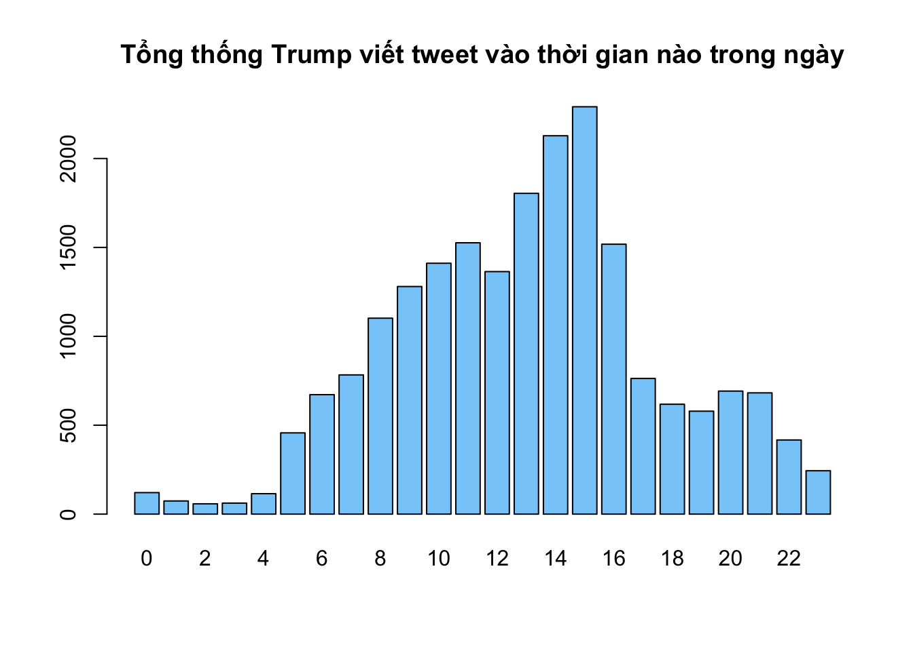

Chapter 4 Methods
We describe our methods in this chapter.
Math can be added in body using usual syntax like this
4.1 math example
\(p\) is unknown but expected to be around 1/3. Standard error will be approximated
\[ SE = \sqrt(\frac{p(1-p)}{n}) \approx \sqrt{\frac{1/3 (1 - 1/3)} {300}} = 0.027 \]
You can also use math in footnotes like this1.
We will approximate standard error to 0.0272
\[ SE = \sqrt(\frac{p(1-p)}{n}) \approx \sqrt{\frac{1/3 (1 - 1/3)} {300}} = 0.027 \]
Now I test the plot of the data in R:
#library(dplyr)
library(dplyr)
data = read.csv("./data/tutor_ggplot2_data.csv")
head(data)## X person_age person_income person_home_ownership person_emp_length
## 1 1 21 9600 OWN 5
## 2 2 25 9600 MORTGAGE 1
## 3 3 23 65500 RENT 4
## 4 4 24 54400 RENT 8
## 5 5 21 9900 OWN 2
## 6 6 26 77100 RENT 8
## loan_intent loan_grade loan_amnt loan_int_rate loan_status
## 1 EDUCATION B 1000.00 11.14 0
## 2 MEDICAL C 5500.00 12.87 1
## 3 MEDICAL C 14473.21 15.23 1
## 4 MEDICAL C 14952.96 14.27 1
## 5 VENTURE A 2500.00 7.14 1
## 6 EDUCATION B 26240.78 12.42 1
## loan_percent_income cb_person_default_on_file cb_person_cred_hist_length
## 1 0.10 N 2
## 2 0.57 N 3
## 3 0.53 N 2
## 4 0.55 Y 4
## 5 0.25 N 2
## 6 0.45 N 3And this is the ggplot2 package:
suppressMessages(library(dplyr))
suppressMessages(library(tidyverse))
data %>% filter(person_income >50000) %>% ggplot(aes(x = loan_amnt)) + geom_histogram(fill = "red", col = "black")## `stat_bin()` using `bins = 30`. Pick better value with `binwidth`.